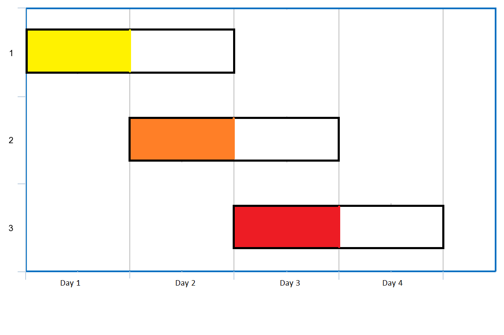

1353. 最多可以参加的会议数目
题目与约束
给你一个数组 events，其中 events[i] = [startDayi, endDayi] ，表示会议 i 开始于 startDayi ，结束于 endDayi 。
你可以在满足 startDayi <= d <= endDayi 中的任意一天 d 参加会议 i 。在任意一天 d 中只能参加一场会议。
请你返回你可以参加的 最大 会议数目。
示例 1：

输入：events = [[1,2],[2,3],[3,4]]
输出：3
解释：你可以参加所有的三个会议。
安排会议的一种方案如上图。
第 1 天参加第一个会议。
第 2 天参加第二个会议。
第 3 天参加第三个会议。
示例 2：
输入：events= [[1,2],[2,3],[3,4],[1,2]]
输出：4
提示：
-
1 <= events.length <= 105 -
events[i].length == 2 -
1 <= startDayi <= endDayi <= 105
核心不变量
在处理某一天时，若有多场可参加的会议，永远优先参加"结束时间最早"的那一场，因为它最容易过期。
完整推导
思路推导
-
直觉：时间只能往前走，每天最多参加一场。面对当天所有"已经可以开始、且还没结束"的会议，如果随便挑，就可能把过早结束的会议拖到过期。所以要挑结束最早的——这就是贪心核心。
-
数据结构：用一个小顶堆存"当前所有可以参加、但还没参加的会议的结束日"。每天先看有没有新的会议在这一天开始（把它们的结束日压入堆），再弹出堆顶（结束最早的一场）作为今天的安排，堆里所有结束日小于今天的直接丢弃（已经过期）。
-
按天推进 + 跳跃优化：从第 1 天开始逐天推进。当堆为空（今天没有可参加的会议）时，直接把"今天"跳到下一个会议的开始日，避免在空白天数上白跑（否则天数为 10^5 级别虽可接受，但跳跃更稳）。
-
小例子：
[[1,2],[2,3],[3,4],[1,2]]。第 1 天有两场[1,2]可选，参加其中一场；第 2 天堆里还剩一场[1,2]与新到的[2,3]，参加结束最早的[1,2]；第 3 天参加[2,3]；第 4 天参加[3,4]，共 4 场。
Java 实现（maxEvents，排序 + 小顶堆）
import java.util.Arrays;
import java.util.PriorityQueue;
class Solution {
public int maxEvents(int[][] events) {
// 按开始日排序，方便按天把新会议加入堆
Arrays.sort(events, (a, b) -> Integer.compare(a[0], b[0]));
PriorityQueue<Integer> pq = new PriorityQueue<>(); // 存结束日的小顶堆
int n = events.length;
int i = 0, day = 1, count = 0;
while (i < n || !pq.isEmpty()) {
// 堆空说明今天没有可参加的会议，直接跳到下一个会议的开始日
if (pq.isEmpty() && i < n) {
day = Math.max(day, events[i][0]);
}
// 把所有今天已经开始的会议加入堆
while (i < n && events[i][0] <= day) {
pq.offer(events[i][1]);
i++;
}
// 丢弃已经过期的会议
while (!pq.isEmpty() && pq.peek() < day) {
pq.poll();
}
// 参加结束最早的一场
if (!pq.isEmpty()) {
pq.poll();
count++;
}
day++;
}
return count;
}
}
C++ 实现
class Solution {
public:
int maxEvents(vector<vector<int>>& events) {
sort(events.begin(), events.end()); // 按开始日升序
priority_queue<int, vector<int>, greater<int>> pq; // 结束日小顶堆
int n = events.size();
int i = 0, day = 1, count = 0;
while (i < n || !pq.empty()) {
if (pq.empty() && i < n) {
day = max(day, events[i][0]); // 跳过空白日
}
while (i < n && events[i][0] <= day) {
pq.push(events[i][1]);
i++;
}
while (!pq.empty() && pq.top() < day) {
pq.pop(); // 丢弃过期会议
}
if (!pq.empty()) {
pq.pop(); // 参加结束最早的一场
count++;
}
day++;
}
return count;
}
};
Python 实现
import heapq
from typing import List
class Solution:
def maxEvents(self, events: List[List[int]]) -> int:
events.sort() # 按开始日升序
pq = [] # 结束日小顶堆
n = len(events)
i, day, count = 0, 1, 0
while i < n or pq:
if not pq and i < n:
day = max(day, events[i][0]) # 跳过空白日
while i < n and events[i][0] <= day:
heapq.heappush(pq, events[i][1])
i += 1
while pq and pq[0] < day:
heapq.heappop(pq) # 丢弃过期会议
if pq:
heapq.heappop(pq) # 参加结束最早的一场
count += 1
day += 1
return count
复杂度
- 时间：O(n log n)，排序 O(n log n)，每场会议进堆、出堆各一次，各 O(log n)。
- 空间：O(n)，小顶堆最多同时存放 n 场会议。
- 贪心对象搞错：应在"可参加的会议"里选结束最早的（小顶堆），而不是开始最早或持续时间最短的。
- 忘记清理过期会议：堆顶结束日小于当天必须弹出丢弃，否则会占用后面的天数，统计出错。
- 天数推进方式：逐天
day++与"堆空时跳到下一开始日"要配合好；跳跃时用Math.max(day, events[i][0])防止回退。 - 排序键：按
startDay升序排序，才能在推进到某天时把"开始日 ≤ day"的会议一次性入堆。 - 复杂度直觉：
n和天数上界都是 10^5，逐天扫描结合跳跃优化后整体仍是 O(n log n)，不会退化成 O(天数 × n)。